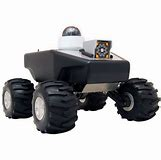

If you have been following banking, investing, or cryptocurrency over the last ten years,
you may be familiar with “blockchain,” the record-keeping technology behind bitcoin.
And there’s a good chance that it only makes so much sense. In trying to learn more about blockchain,
you've probably encountered a definition like this: “blockchain is a distributed, decentralized, public ledger."
The good news is, blockchain is actually easier to understand than that definition sounds.
Blockchain is the technology behind digital currency (eg: Bitcoin).
This technology allows digital information to be distributed, but not copied.
This means each individual piece of data can only have one owner.
The information is stored in multiple locations and updated instantly.
That means the records are public, and since there’s no central location,
it harder to hack since the information exists simultaneously in millions of places.
Anyone can view the contents of the blockchain, but users can also opt to connect
their computers to the blockchain network. In doing so, their computer receives a copy
of the blockchain that is updated automatically whenever a new block is added, sort of
like a Facebook News Feed that live updates whenever a new status is posted.
Link to Blockchain Website
Autonomous things, such as robots, drones and autonomous vehicles, go beyond the automation provided by rigid programming
models and exploit AI to deliver advanced behaviours that interact more naturally with their surroundings and with people,
according to David Cearley, Vice-President and Gartner Fellow.
Autonomous robots are intelligent machines capable of performing tasks in the world by themselves, without explicit human control.
Examples range from autonomous helicopters to Roomba, the robot vacuum cleaner.
An autonomous robot is a robot that performs behaviors or tasks with a high degree of autonomy.
Autonomous robotics is usually considered to be a subfield of artificial intelligence, robotics, and
information engineering. Early versions were proposed and demonstrated by author/inventor David L. Heiserman.
Autonomous robots are intelligent machines capable of performing tasks in the world by themselves,
without explicit human control. Examples range from autonomous helicopters to Roomba, the robot vacuum cleaner.
In this book, George Bekey offers an introduction to the science and practice of autonomous robots that can be used
both in the classroom and as a reference for industry professionals. He surveys the hardware implementations of more
than 300 current systems, reviews some of their application areas, and examines the underlying technology, including control,
architectures, learning, manipulation, grasping, navigation, and mapping.

Link to more information on Autonomous robots
An immersive experience is an illusory environment that completely surrounds you such that you feel that you are inside it and part of it.
The term is associated with technology environments that command the senses such as virtual reality and mixed reality.
Conversational platforms are changing the way in which people interact with the digital world.
Virtual reality (VR), augmented reality (AR) and mixed reality (MR) are changing the way in which people perceive the digital world.
This combined shift in perception and interaction models leads to the future immersive user experience.
“Over time, we will shift from thinking about individual devices and fragmented user interface (UI) technologies to a multichannel and multimodal experience,” Gartner says.
Link to more information on Immersive Experience